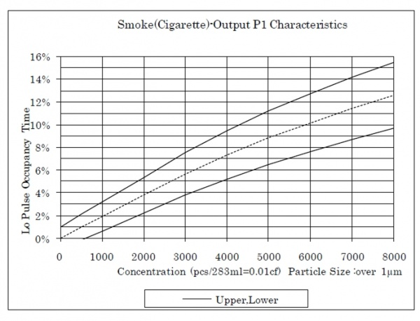

API - Interrupt-Based Devices¶
In this section the Python API reference for interrupt-based devices is described. This library is supported on both major versions of Python: 2.x and 3.x.
The API for the following sensors is described in this section:
- Grove Dust Sensor
- Grove Encoder
- Grove Water Flow Sensor of whose functionality can be used in other applications too
Apart from describing the API for the above sensors, there is also described a set of functions used to set interrupt events on the GrovePi. These functions are like the building blocks of the API of the above sensors and can be used for your own implementation, should it be applicable to your device.
IMPORTANT
This library and the other ones too are not thread-safe. You cannot call the GrovePi from multiple threads or processes as that will put the GrovePi into a broken state.
In case you need to reset the GrovePi from your Raspberry Pi, check this section.
The functions don't verify if the input parameters are valid and therefore the parameters have to be verified/validated before that. Calling a function with improper parameters can result in an undefined behavior for the GrovePi.
grovepi.set_pin_interrupt(pin, ftype, interrupt_mode, period)¶
Attach an interrupt event to a port.
Can be used to count pulses, duration of pulses, set different kinds of trigger modes (on change, rising or falling edges) all done within a given time period.
If there are subsequent calls to this set function without detaching the interrupt event first from a given pin, then it will overwrite the old setting and update it to reflect the latest one.
Also, setting this up disables the OUTPUT functionality on the selected pin. If the selected pin has to drive the output, then detach the interrupt event with grovepi.unset_pin_interrupt.
Parameters
pin {Integer}can be pins D2-D8 to which the device is connected toftype {Integer}the type of event/operation associated for the given pin. Can take valuesgrovepi.COUNT_CHANGES(for counting the number of triggers) orgrovepi.COUNT_LOW_DURATION(which measures how much time the signal stays low in a given period).interrupt_mode {Integer}triggering mode of the interrupt. It can begrovepi.CHANGE,grovepi.FALLINGorgrovepi.RISING, just like on the Arduino.period {Integer}specifying after how long the recorded value should be stored on the GrovePi to be subsequently read on the master device (Raspberry Pi). Measured in milliseconds. Minimum value shouldn't be too small (say under 5 ms) and the maximum value is 65535 ms.
Returns: None
grovepi.unset_pin_interrupt(pin)¶
Detach an interrupt event from a given pin.
Necessary if you want to set output values to this pin with grovepi.digitalWrite function.
Parameters
pin {Integer}pins D2-D8 from which the interrupt is released from
Returns: None
grovepi.unset_all_interrupts()¶
Detach all active interrupt events on all pins.
Parameters: None
Returns: None
grovepi.is_interrupt_active(pin)¶
Check if a pin has an interrupt event associated.
Parameters
pin {Integer}pin to check (D2-D8) if there's an associated interrupt event
Returns: {Bool} - True if it has an interrupt event associated and False if otherwise.
grovepi.get_active_interrupts()¶
Get a list of all pins that have associated interrupt events.
Parameters: None
Returns: A list of integers representing the active pins that have interrupt events.
grovepi.read_interrupt_state(pin)¶
Get the recorded value by the interrupt event on the given pin.
If an interrupt is set on pin D2 (D2 is taken as an example, it can be any other digital pin) with the type of operation set to grovepi.COUNT_CHANGES and mode of interrupt set to grovepi.RISING with a period set to 1000 ms, then say if 567 rising edges are detected, then at the end of this period of 1000 ms, this function will return for pin D2 value 567. And the returned value of this function on D2 pin will update every 1000 ms, because that's the period that has been set for it. And the outcome varies depending on how the interrupt event is initially set.
Parameters
pin {Integer}pin to check the recorded value for the associated interrupt event
Returns: {Bool} - True if it has an interrupt event associated and False if otherwise.
grovepi.dust_sensor_en(pin = 2, period = 30000)¶
Enables the Grove Dust Sensor.
If there is another interrupt event set on this pin, calling this method will overwrite the previous setting. Check grovepi.set_pin_interrupt to find out more. It's the same effect as with calling this after calling grovepi.encoder_en or grovepi.flowEnable.
This function is the same as calling set_pin_interrupt(pin, ftype=COUNT_LOW_DURATION, interrupt_mode=CHANGE, period=period).
Parameters
pin {Integer}the pin (D2-D8) to which the dust sensor is assigned toperiod {Integer}refresh time frame for the dust sensor. Maximum value for this parameter is 65535 ms.
Returns: None
grovepi.dust_sensor_dis(pin = 2)¶
Disables the Grove Dust Sensor.
To disable the dust sensor that sits on the given pin. It's the same as calling unset_pin_interrupt function.
This function will be removed from future versions and it's only kept for making the API backwards-compatible.
Parameters:
pin {Integer}the pin (D2-D8) to which the dust sensor is connected to
Returns: None
grovepi.dust_sensor_read(pin = 2, period = 30000)¶
Reads the low pulse occupancy of the Grove Dust Sensor in the given period of time as set with grovepi.set_pin_interrupt function.
Parameters: None
pin {Integer}- the pin (D2-D8) to which the dust sensor is connected toperiod {Integer}- refresh time frame for the dust sensor as set with grovepi.set_pin_interrupt function. Maximum value for this parameter is 65535 ms.
Returns: {(Integer, Float, Float)} list
- 1st element is the LPO time
- the 2nd one is the percentage (LPO time divided by total period)
- the 3rd is the concentration as measured in pcs/283ml=0.01cf where the particle size is over 1um
The dust sensor's characteristics can be seen in the following graph.

grovepi.encoder_en(pin = 2, steps = 32)¶
Enable the Grove Encoder.
If the pin already has an associated interrupt event, calling this method will overwrite the setting with the new change for the given pin.
Since the encoder needs two interrupt-enabled pins, when calling this function for a pin, it also attaches the next pin in line pin + 1. To see which pins have been attached, call get_active_interrupts function.
Parameters:
-
pin {Integer}the pin to which the encoder is connected to. It also attaches the pin right next up in its line pin + 1. Can be set for D2-D7 pins. Notice how the last one can't be used because there would have to be another pin available after it, but there isn't because it's the last one in the chain. -
steps {Integer}specifies the number of steps for the encoder
Returns: None
grovepi.encoder_dis(pin = 2)¶
Disable the Grove Encoder.
Necessary if you want to set output values to this pin with grovepi.digitalWrite function. It's the same as calling unset_pin_interrupt function for pin and pin + 1.
Parameters:
pin {Integer}the pin (D2-D8) to which the flow sensor is connected to
Returns: None
grovepi.encoderRead(pin = 2)¶
Read the data off of the Grove Encoder.
Parameters:
pin {Integer}- the pin (D2-D7) to which the encoder is attached to.
Returns: {Integer} the current position of the encoder
grovepi.flowEnable(pin = 2, period = 2000)¶
Enables the Grove Water Flow Sensor.
This function literally counts the number of rising pulses in the given time period. Because of that, calling this is the same as calling set_pin_interrupt(pin, ftype=COUNT_CHANGES, interrupt_mode=RISING, period=period) for pin.
If the pin already has an associated interrupt event, calling this method will overwrite the setting with the new change for the given pin.
This function will be removed from future versions and it's only kept for making the API backwards-compatible.
Parameters
pin {Integer}the pin (D2-D8) to which the dust sensor is assigned toperiod {Integer}refresh time frame for the dust sensor. Maximum value for this parameter is 65535 ms.
Returns: None
grovepi.flowDisable(pin = 2)¶
Disables the Grove Water Flow Sensor.
Necessary if you want to set output values to this pin with grovepi.digitalWrite function. It's the same as calling unset_pin_interrupt function.
This function will be removed from future versions and it's only kept for making the API backwards-compatible.
Parameters:
pin {Integer}the pin (D2-D8) to which the flow sensor is connected to
Returns: None
grovepi.flowRead(pin = 2)¶
Enables the Grove Water Flow Sensor.
This function counts the number of rising pulses in the time period set with grovepi.flowEnable.
It's the same as calling grovepi.read_interrupt_state for the given pin.
Parameters:
pin {Integer}the pin (D2-D8) to which the flow sensor is connected to
Returns: {Integer} number of rising pulses that occurred within the given time frame